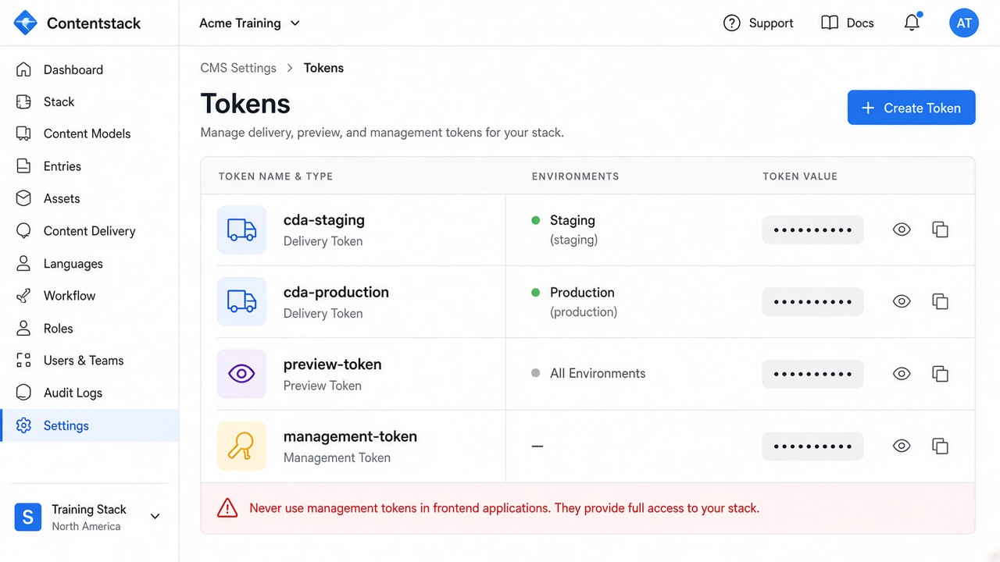

Home / Labs / 00
Lab setup — Horizon Market sandbox
Time: 45–60 minutes
You need: a Contentstack trial or training organization, Postman or curl, and a notes file for UIDs.
Do not use a client production stack for these labs.

---
1. Create the stack
- Sign in at app.contentstack.com (or your region’s app host).
- Create stack Horizon Market QA.
- Note Stack API key and region (NA / EU / Azure / GCP).
- Settings → Environments → create:
developmentstagingproduction- Settings → Languages → add
French - France(fr-fr) andGerman - Germany(de-de) with fallbacken-us. - Settings → Tokens:
- Delivery token named
cda-stagingscoped tostaging - Delivery token named
cda-productionscoped toproduction - Preview token for
staging(if offered with the delivery token) - Management token only if you are allowed to create types via API; otherwise use the UI
Store tokens in a local .env that is never committed.
CS_API_KEY=
CS_DELIVERY_STAGING=
CS_DELIVERY_PRODUCTION=
CS_PREVIEW_STAGING=
CS_REGION_CDA_HOST=https://cdn.contentstack.io---


2. Create roles (if you have admin)
| Role | Entries | Publish | Languages |
|---|---|---|---|
| HM Author | Create/Update selected types | None or development only | All |
| HM Reviewer | Read + workflow | None | All |
| HM Publisher | Read | staging + production | All |
| HM QA | Read all | staging only | All |
| HM Translator FR | Update | None | fr-fr only |
Invite a second browser profile or teammate for negative role tests. If you cannot create roles, skip Lab 05 role cases and still do workflow as Admin (note the limitation).
---
3. Optional workflow
Settings → Workflows → Horizon Review:
Draft → In Review → Approved → Published
Assign to product, article, landing_page, promo_banner.
Add a publish rule: production publish allowed only from Approved or Published (match your org’s pattern).
---
4. Tools
- Browser + Contentstack app
- Postman or curl
- JSON viewer
- Spreadsheet or
notes/lab-uids.mdfor UIDs
Postman header preset
api_key: {{CS_API_KEY}}
access_token: {{CS_DELIVERY_STAGING}}---
5. Definition of setup done
- Three environments exist
- Two locales + fallback exist
- Staging and production delivery tokens work (
GET /v3/content_typesor a later entry call) - You know your region hosts
- You will not publish lab junk to any client production stack
---